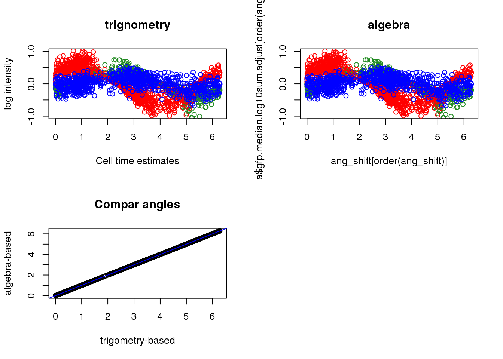

Last updated: 2018-07-16
Code version: a6eb777
Compare cell time estimates derived from algebraic methods versus from trignometric transformation.
Do same for cell times based on FUCCI and cell times based on FUCCI and DAPI.
library(Biobase)
df <- readRDS(file="../data/eset-final.rds")
pdata <- pData(df)
fdata <- fData(df)
# select endogeneous genes
counts <- exprs(df)[grep("ENSG", rownames(df)), ]
log2cpm.all <- t(log2(1+(10^6)*(t(counts)/pdata$molecules)))
#macosko <- readRDS("data/cellcycle-genes-previous-studies/rds/macosko-2015.rds")
counts <- counts[,order(pdata$theta)]
log2cpm.all <- log2cpm.all[,order(pdata$theta)]
pdata <- pdata[order(pdata$theta),]
log2cpm.quant <- readRDS("../output/npreg-trendfilter-quantile.Rmd/log2cpm.quant.rds")
pca_double <- prcomp(cbind(pdata$gfp.median.log10sum.adjust,
pdata$rfp.median.log10sum.adjust), scale. = T)
pca_triple <- prcomp(cbind(pdata$gfp.median.log10sum.adjust,
pdata$rfp.median.log10sum.adjust,
pdata$dapi.median.log10sum.adjust), scale. = T)
library(circular)
theta_triple <- as.numeric(coord2rad(pca_triple$x[,1:2]))
theta_double <- as.numeric(coord2rad(pca_double$x[,1:2]))
names(theta_triple) <- rownames(pdata)
names(theta_double) <- rownames(pdata)source("../peco/R/intensity2circle.R")
library(conicfit)
par(mfrow=c(1,1))
df <- cbind(pdata$gfp.median.log10sum.adjust,
pdata$rfp.median.log10sum.adjust)
ang <- intensity2circle(df, plot.it = TRUE)par(mfrow=c(1,1))
source("../peco/R/cycle.corr.R")
ang_shift <- rotation(theta_double, ang)
par(mfrow=c(2,2))
plot(x=theta_double[order(theta_double)],
y=pdata$gfp.median.log10sum.adjust[order(theta_double)], col="forestgreen",
ylab="log intensity", xlab="Cell time estimates",
main = "trignometry", ylim=c(-1, 1))
points(x=theta_double[order(theta_double)],
y=pdata$rfp.median.log10sum.adjust[order(theta_double)], col="red")
points(x=theta_double[order(theta_double)],
y=pdata$dapi.median.log10sum.adjust[order(theta_double)], col="blue")
plot(x=ang_shift[order(ang_shift)],
y=pdata$gfp.median.log10sum.adjust[order(ang_shift)], col="forestgreen",
main = "algebra", ylim=c(-1, 1))
points(x=ang_shift[order(ang_shift)],
y=pdata$rfp.median.log10sum.adjust[order(ang_shift)], col="red")
points(x=ang_shift[order(ang_shift)],
y=pdata$dapi.median.log10sum.adjust[order(ang_shift)], col="blue")
plot(ang_shift, theta_double,
xlab="trigometry-based",
ylab="algebra-based", main="Compar angles"); abline(0,1, col="blue")
# algebraic methods
source("../peco/R/intensity2circle.R")
library(conicfit)
par(mfrow=c(1,1))
df <- cbind(pdata$gfp.median.log10sum.adjust,
pdata$rfp.median.log10sum.adjust,
pdata$dapi.median.log10sum.adjust)
ang <- intensity2circle(df, plot.it = TRUE)par(mfrow=c(2,2))
source("../peco/R/cycle.corr.R")
ang_shift <- rotation(theta_triple, ang)
ang_shift <- ang_shift%%(2*pi)
plot(x=theta_triple[order(theta_triple)],
y=pdata$gfp.median.log10sum.adjust[order(theta_triple)], col="forestgreen",
ylab="log intensity", xlab="Cell time estimates",
main = "trignometry", ylim=c(-1, 1))
points(x=theta_triple[order(theta_triple)],
y=pdata$rfp.median.log10sum.adjust[order(theta_triple)], col="red")
points(x=theta_triple[order(theta_triple)],
y=pdata$dapi.median.log10sum.adjust[order(theta_triple)], col="blue")
plot(x=ang_shift[order(ang_shift)],
y=pdata$gfp.median.log10sum.adjust[order(ang_shift)], col="forestgreen",
main = "algebra", ylim=c(-1, 1))
points(x=ang_shift[order(ang_shift)],
y=pdata$rfp.median.log10sum.adjust[order(ang_shift)], col="red")
points(x=ang_shift[order(ang_shift)],
y=pdata$dapi.median.log10sum.adjust[order(ang_shift)], col="blue")
plot(ang_shift, theta_triple,
xlab="trigometry-based",
ylab="algebra-based", main="Compar angles"); abline(0,1, col="blue")sessionInfo()R version 3.4.3 (2017-11-30)
Platform: x86_64-pc-linux-gnu (64-bit)
Running under: Scientific Linux 7.4 (Nitrogen)
Matrix products: default
BLAS/LAPACK: /software/openblas-0.2.19-el7-x86_64/lib/libopenblas_haswellp-r0.2.19.so
locale:
[1] LC_CTYPE=en_US.UTF-8 LC_NUMERIC=C
[3] LC_TIME=en_US.UTF-8 LC_COLLATE=en_US.UTF-8
[5] LC_MONETARY=en_US.UTF-8 LC_MESSAGES=en_US.UTF-8
[7] LC_PAPER=en_US.UTF-8 LC_NAME=C
[9] LC_ADDRESS=C LC_TELEPHONE=C
[11] LC_MEASUREMENT=en_US.UTF-8 LC_IDENTIFICATION=C
attached base packages:
[1] parallel stats graphics grDevices utils datasets methods
[8] base
other attached packages:
[1] conicfit_1.0.4 geigen_2.2 pracma_2.1.1
[4] circular_0.4-93 Biobase_2.38.0 BiocGenerics_0.24.0
loaded via a namespace (and not attached):
[1] Rcpp_0.12.17 mvtnorm_1.0-8 digest_0.6.15 rprojroot_1.3-2
[5] backports_1.1.2 git2r_0.21.0 magrittr_1.5 evaluate_0.10.1
[9] stringi_1.1.6 boot_1.3-20 rmarkdown_1.10 tools_3.4.3
[13] stringr_1.2.0 yaml_2.1.16 compiler_3.4.3 htmltools_0.3.6
[17] knitr_1.20 This R Markdown site was created with workflowr